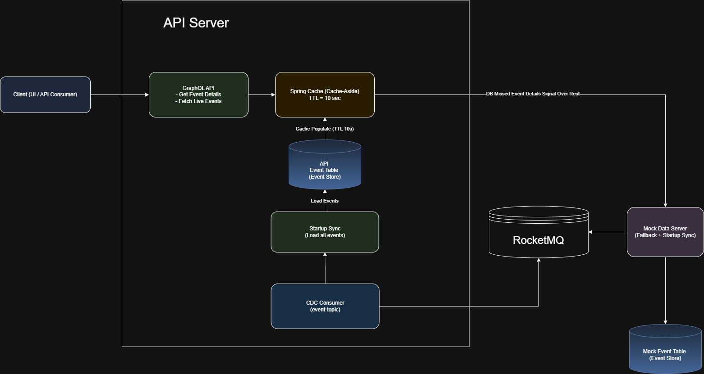
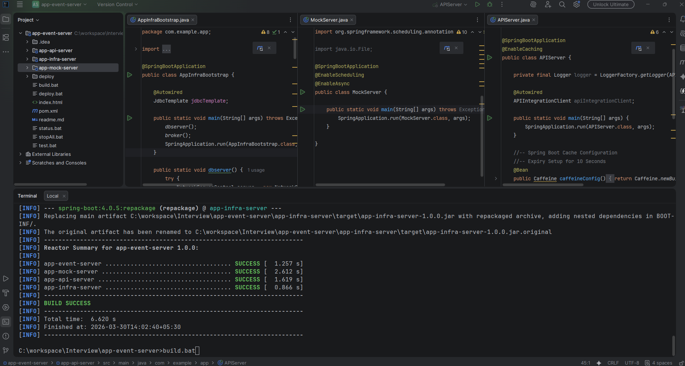

Here’s a clean, structured, interview-ready Markdown document with improved wording, missing sections added, and your diagram embedded.
📌 Event API Server Application
🏗️ Architecture Overview

🔹 API Server
The API Server acts as the central access layer for clients and manages caching, persistence, and fallback strategies.
🔹 Infra Server
Responsible for infrastructure initialization and environment setup.
- Start Apache Derby Network Server
- Drop and recreate all tables (clean state)
- Clean RocketMQ message store directory
- Start Apache RocketMQ Broker
🔹 Mock Data Server
Simulates external event provider and drives system behavior.
🔄 End-to-End Data Flow
- Client calls GraphQL API
- API checks cache
- Cache miss → DB lookup
- DB miss → REST call to Mock Server
- Response saved in DB → Cache updated
- CDC consumer continuously updates DB from MQ
- Cache refreshes on next request (TTL expiry)
🗄️ Data Model
API_EVENT_DETAILS
| Column Name |
Type |
Description |
| EVENT_ID |
INT |
Unique event identifier |
| EVENT_STATUS |
BOOLEAN |
Live / inactive status |
| EVENT_SCORE |
STRING |
Event score/details |
| CREATED_TS |
TIMESTAMP |
Creation timestamp |
| UPDATED_TS |
TIMESTAMP |
Last update timestamp |
Note: Ensure normalization if separating API vs Mock tables.
🧩 Implementation
🔹 Modules
1. app-infra-server
- Starts Apache Derby DB
- Drops & recreates schema
- Starts RocketMQ broker
- Cleans message store
2. app-api-server
- GraphQL API layer
- Cache management (Spring Cache)
- DB interaction
- CDC consumer integration
3. app-mock-server
- Mock REST APIs
- Event simulation (scheduler)
- MQ publisher
- Java + Spring Boot
- Spring GraphQL
- Spring Cache (Caffeine)
- Apache Derby (Embedded DB)
- Apache RocketMQ
- Actuator + Micrometer (Monitoring)
🚀 Deployment Scripts
🔹 Build
build.bat
- Builds all modules
- Copies artifacts to
/deploy
🔹 Test
test.bat
- Executes unit/integration tests
- Generates Surefire reports
🔹 Deploy
deploy.bat
Steps:
- Stop all services (
stopAll.bat)
- Build and copy artifacts
- Start all services (
startAll.bat)
- Verify using
status.bat
📡 Runbook & Access URLs
📊 Monitoring & Observability
🔹 Logs
deploy/logs/app-api-server.logdeploy/logs/app-infra-server.logdeploy/logs/app-mock-server.log
🔹 Health Checks
API Server
Infra Server
Mock Server
🛡️ Non-Functional Considerations (Added)
🔹 Scalability
- Stateless API layer → horizontally scalable
- Cache reduces DB load
- MQ decouples producers/consumers
🔹 Consistency
- Eventual consistency via CDC
- Cache TTL ensures freshness balance
- Cache-first strategy (10s TTL)
- Async MQ updates
🔹 Fault Tolerance
- Fallback to Mock Server
- Retry mechanisms for MQ consumption
🧠 Design Patterns Used
- Cache-Aside Pattern
- Event-Driven Architecture
- CQRS-lite (read via cache, write via CDC)
- Retry + Fallback Pattern
Developer Setup
- Import code in intellij
- run build.bat to build all modules and start them in below chronology
- start AppInfraBootstrap.java
- start MockServer.java
- start APIServer.java
/ul>
